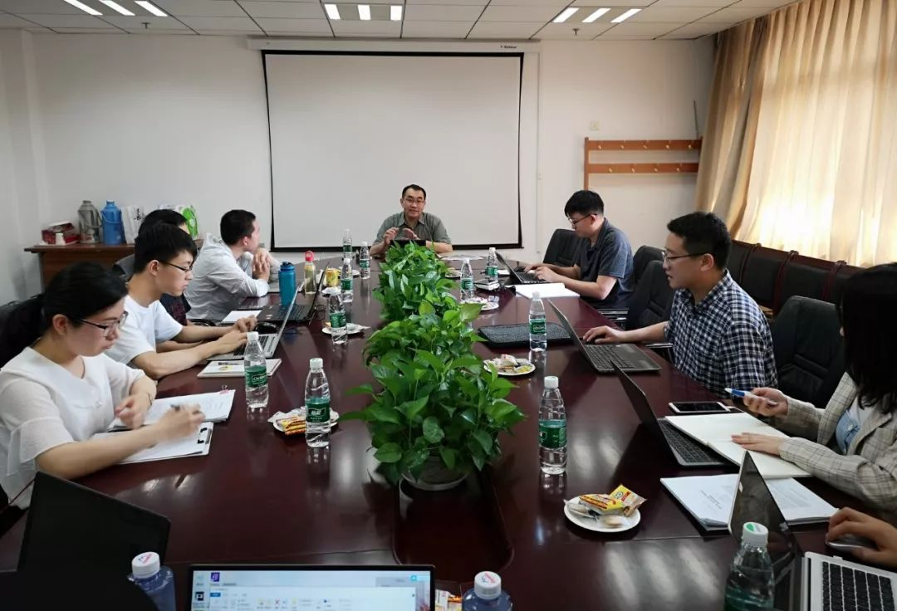

活动侧记｜观念与制度：比较历史分析文献讨论会（三）
收录于合集
2019年7月12日，第三期比较历史分析文献讨论会在中国人民大学明德国际楼813会议室举行。本期讨论会的主题是“制度和观念”。与会者包括黄宗昊（上海交通大学）、马雪松（吉林大学）、刘城晨（安徽大学）、刘庆乐（中央财经大学）、王思丹（外交学院）等老师和来自北京大学、吉林大学、武汉大学、北京外国语大学以及中国人民大学等高校的研究生和本科生。没错，数名本科低年级的同学也参加了本次讨论会，这既反映出比较历史分析的魅力（令人欣喜），也说明了师弟师妹的勤奋（令人汗颜）。
会议伊始，作为主持人的黄宗昊老师一如既往地为比较历史分析及其系列活动打call，并依次介绍了与会讨论的老师。随后，马雪松老师首先发言，他指出，新制度主义的“新”有两种表述，一为new，一为neo。其中，new意味着破旧立新，而neo则表明藕断丝连。在此基础上，马老师回顾了自己近年来对于新制度主义政治学研究的历程和心得。凭借广博的学识和儒雅的风度，马老师一时间圈粉无数。接下来，刘庆乐老师做了发言，他认为制度与观念之间的关系需要考虑两个问题：如何从个体观念到共享观念，如何实现制度观念到制度议程的转移。王思丹老师点燃了讨论会的第一把火，他认为话语制度主义可能会淡化社会建构主义的基点，窄化和限制社会建构主义，用“话语”补充“制度主义”可能会消解社会建构的内容。刘城晨老师基于自己的求学经历与心理历程批判性的回顾了历史制度主义与国际关系之间的勾连与张力。北京大学社会学系博士生董彦峰结合社会学理论，谈了他对观念在社会学学科中内涵和意义的理解。
黄宗昊老师则阐明了支持历史制度主义的坚定立场。他分别从以下角度进行阐述：首先，很难赋予历史制度主义的定义，每个代表性学者的观点都不太一致，共识存在程度差异，因此话语制度主义对历史制度主义的攻讦很难击中要害。其次，历史制度主义从诞生开始就注重观念对制度变迁的影响。斯坦莫和西伦明确说要注重观念，只不过可能在实证研究中观念的分量还不够。最后，历史制度主义是很好的理论搭载平台，其他流派的观点完全可以放在其中。
对此，马雪松老师的回应则从回顾比较历史分析的学术史开始，他认为，从摩尔的历史社会学到斯考切波等人的新国家主义，到1992年提出“历史制度主义”的论文集，再到社会科学/政治科学中的比较历史分析，历史制度主义在发展过程中往往轻视观念，过于将观念看作异己者，没有关注心理学和政治行为研究的最前沿。在此基础上，他认为在结构与能动二分之外，建构能提供更好的本体论基础，据此他建议将第四种制度主义命名为建构制度主义。
黄宗昊老师借助对理性选择制度主义的分析间接回应了马雪松老师：理性选择制度主义首先将人的行为简化，进而把人划进了结构，所以从本质上说它是结构性的，而不是以行动者为中心的。同时，黄老师表示虽然认可马老师提出的建构论，但仍然对是否存在“话语制度主义”这一流派表示疑惑。

上午的有效时间总是那么短暂，转眼便到了正午，大家一致同意补充能量后再战。
下午讨论的核心刚开始是“制度”。马雪松老师认为社会科学需要处理三对关系：经验主义与理性主义、诠释主义和解释主义、个体主义和整体主义。话语分析的制度主要是指制度事实，它是人和人的互动的结果，这个过程产生了能被人感知的规则，继而形成结构。黄宗昊老师对马老师的“人和人的互动产生制度”的说法表示担忧。黄老师表示，理性选择制度主义关注的制度是主要是正式的，历史制度主义则同时关注正式和非正式的制度，马老师的说法会不会造成制度的过度延伸？
刘庆乐老师认为历史制度主义和话语制度主义之间存在相互贴标签的现象。他指出，历史制度主义可能认为话语制度主义漫无目的，是不是可以把“制度”拿掉？而对话语制度主义来说，历史制度主义过去对于制度的界定是否过于僵化？刘老师借用萨巴蒂尔的倡议联盟框架，认为形成共识需要行动规则- 行为规范- 认知框架这样一个过程：最开始是需要行动策略来达成默契，不然难以实现集体行动；然后需要从行动策略过渡到价值认同，进一步稳定合作关系，第三个层次则是深刻的理论基础，通过理论诠释来实现行为的正当性、因果关系的说明，不然观念不能扩散。刘老师继而提出，我们需要关注新观念如何介入旧制度，如何将新的制度议程吸纳入旧的制度从而引起制度变迁。董彦峰同学认为刘老师的分析很有启发性，只有变为制度才能传递和共享观念。
借助刘庆乐老师的东风，黄宗昊老师发起了第二轮攻势。他认为历史制度主义的两个要素并没有在话语制度主义中获得足够的关注。首先是权力和斗争，在话语制度主义给定的框架下淡化甚至无视权力的作用，而在因果链中，最接近结果的往往是权力斗争。综合考量来看，其实权力分析可以包括观念或利益的，权力既是工具，用来获得利益或实践理念；权力也是目的，因为它本身能带来某种愉悦的“效用”。其次是时间性问题，某些制度存在的时间久了自然而然就有了合法性。制度化本身就包括了时间，是一个过程。问题是观念能不能单独解释，还是需要附加在某些东西之上。黄老师的发言大家的关注点从制度转移到了观念和权力的关系。
中国人民大学国际关系学院博士生陆屹洲简洁有力地表达了自己的观点：观念是基因，制度是表型，权力决定基因能否成为表型。不是观念重不重要的问题，而是如何选择的问题。我们能够发现和研究的往往已经是权力斗争之后的观念，隐藏在诸多行动者背后的不同观念往往很难发掘。话语制度主义是完全可以被整合进历史制度主义的（黄宗昊老师精神为之一振，说道：“这正是我想说而不敢说的那句话！”）。
武汉大学的宗远威同学认为观念能够发挥一种“要素”的作用，它能够作为制度化的过程中的资源和武器，作为政治斗争的要素和计算的筹码。刘庆乐老师认为制度形成中的权力和斗争要视情况而定。制度中的不同类型如正式和非正式的制度互动是不一样的。这其中有没有权力参与？可能有也可能没有。
马雪松老师进一步解释了话语制度主义的内涵，他指出，施密特在制度和观念之间引入话语，很多人往往关注“背景性观念能力”，而忽略了“前景性话语能力”。施密特构建的权力网络很复杂，包括国家之间、国家与民众之间等多个维度的互动。同时，“符号”本身也是一种权力，对于这点要充分重视。
时间不多了，在场的各位同学也赶紧抓住机会发表自己的意见。
吉林大学行政学院博士生赵德昊认为，与理性选择制度主义强调均衡、历史制度主义强调外部冲击相比，话语制度主义强调制度变迁的内部起源。黄老师说的权力确实能解释很多问题，尤其是国家层面的问题。但在其他领域，观念也有它的解释力，例如在解释移民和右翼政党投票率的关系时，移民的观念是非常重要的。当然，观念的变化不是没有任何依据的变化，我们需要考虑它和权力的关系，观念可能是其他结构性变化的反映。
中国人民大学国际关系学院博士生释启鹏作为比较历史分析的“原教旨主义者”，认为在历史制度主义中纳入话语制度主义会让我们遗忘初心，从而抛弃解释而偏向解析的传统，缺乏对整体性、普遍性规律的探讨。如果将观念引入历史制度主义，那么它难以和时间性契合。同时，制度是为了权力的分配，而不是促成合作，我们应该重视其权力要素。马雪松老师对此做了回应，他认为已经有研究探讨了观念对因果效应的影响，对于如何处理观念和历史性和时间性的关系，他将思考后写成文章进行回应（对此我们表示非常期待）。
中国人民大学国际关系学院硕士生刘天祥提出了自己的疑惑，首先是观念的来源是什么；其次是整体性的观念、话语和自下而上的底层观念是不是存在差异，这是否会模糊关键的行动者。黄宗昊老师认为观念的起源并非完全可研究，但也不是完全不能研究，需要和现实情境结合起来；吉林大学行政学院博士生王慧指出，施密特在文章中已经提到了自上而下和自下而上的话语的问题。
虽然进行了一整天的交流，但是大家依然觉得不够尽兴，还有很多问题没有讨论。讨论会结束后，马雪松老师在朋友圈的一条更新，值得与大家分享：“Berger和Luckmann认为社会实在兼有客观真实和主观意义，Searle认为能动者运用语词和实践创造出制度性事实。“
除了上述内容之外，与会者还讨论了认知在不同学科中的含义、结构和能动的关系、研究方法的选择等等问题，囿于理解能力和纪要篇幅，笔者难以还原现场开放而热烈的讨论过程，也可能对大家的发言内容存在误解。所以，对于读者而言，最好的选择当然是亲临现场了。今年11月份我们还会举办“历史制度主义工作坊”，欢迎读者朋友们继续关注。
撰文：何家丞
审读：释启鹏
编辑：杨端程


政文观止
微信扫一扫赞赏作者 __赞赏
已喜欢，对作者说句悄悄话
取消 __
发送给作者
发送
最多40字，当前共字
上一页 1/3 下一页
长按二维码向我转账
受苹果公司新规定影响，微信 iOS 版的赞赏功能被关闭，可通过二维码转账支持公众号。